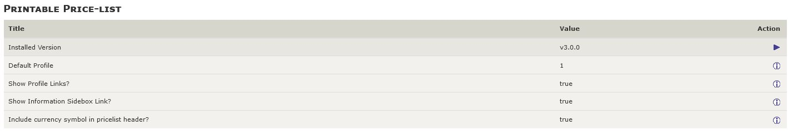

Ausdruckbare Preisliste — für Zen Cart 1.5.7 deutsch
Sinn und Zweck dieses Moduls
Dieses Plugin stellt, wie der Name schon sagt, eine druckbare Preisliste zur Verfügung, die Ihre Kunden ansehen und/oder drucken können. Sobald die Dateien des Plugins installiert sind, können Sie die Preislistenanzeige Ihres Shops über die neuen, von der Installation erstellten Konfigurationsbildschirme konfigurieren.
Das Modul ist vollständig multilingual, sowohl im Admin als auch im Frontend.
Version History
- v3.0.1, 2022-03-20 (lat9/swguy/webchills):
- BUGFIX: Correct missing parentheses on function call.
- Anpassung für 1.5.7 deutsch, Anleitung aktualisiert
- fehlende Übersetzungen neuer Konfigeinträge ergänzt
- v3.0.0, 2021-11-18 (lat9):
- CHANGE: Minimum Zen Cart version is now zc157.
- BUGFIX: Include 'date_added' when creating initial configuration settings.
- BUGFIX: Correct PHP warnings issued if no pricing is to be displayed.
- BUGFIX: Correctly display prices with/without tax, based on the site's configuration setting.
- BUGFIX: Product pricing now includes any updates for products priced by attributes.
- CHANGE: Price-lists can now be configured for featured, special or sub-category products' listings.
- CHANGE: Only categories with products are now displayed.
- CHANGE: Now displaying products' options' with pricing.
- CHANGE: Products' images (if configured) now display next to the product's name, no more location randomization.
- v2.0.4, 2019-08-10 (webchills):
- Anpassung an 1.5.6
- v2.0.3, 2016-01-24 (lat9):
- BUGFIX: Price (inc) not properly calculating the included tax.
- v2.0.2, 2016-01-13 (lat9):
- BUGFIX: Price (ex) not displayed if Price (inc) not displayed, too.
- v2.0.1, 2015-07-24 (lat9):
- BUGFIX: Corrected the name of /includes/templates/template_default/pricelist/profile-1.css (was proile-1.css).
- BUGFIX: Include missing language /extra_definition files.
- CHANGE: Open pricelist in a new window when Information sidebox link is clicked. Changed /includes/modules/sideboxes/YOUR_TEMPLATE/information.php.
- CHANGE: Add configuration switch to enable/disable display of the currency symbol in the pricelist display's header. Changed /YOUR_ADMIN/includes/functions/extra_functions/init_price_list_admin.php and /includes/templates/template_default/pricelist/tpl_main_page.php.
- CHANGE: Added permissions-check notice to the top of this readme.
- v2.0.0, 2014-10-26 (lat9): Initial release for Zen Cart v1.5.1 and later. The following changes were introduced:
- Converted separate SQL installation script into an admin auto-loaded script.
- Re-structured to make use of current browsers' ability to handle proper printing of web-pages via CSS media-print styling. Many configuration settings from previous versions are no longer required!
- v1.5.0, 2007-12-20 (paulm): Last update for the Zen Cart v1.3.x series. Refer to that plugin's readme.txt for additional change history.
Installation
Voraussetzungen
Dieses Modul ist nur für die deutsche Zen Cart 1.5.7 Version geeignet
Für den Einbau dieses Moduls sollten Sie über folgende Werkzeuge verfügen:
1) Ein guter Texteditor
Damit ist nicht das in Windows enthaltene Notepad oder Microsoft Word gemeint.
Sie benötigen einen Texteditor, der utf-8 versteht und auch im Format utf-8 ohne BOM abspeichern kann.
Meine Empfehlung: UltraEdit (kostenlose 30 Tage Testversion verfügbar)
Ebenfalls gut geeignet ist der kostenlose Texteditor Notepad++
2) Ein Tool zum Vergleichen von Dateien
Bei der Installation dieses Moduls ist es erforderlich, dass Sie den Inhalt einiger Ihrer bestehenden Zen Cart Dateien mit dem Inhalt der neuen Moduldateien vergleichen und die Änderungen zusammenführen ("mergen").
Meine Empfehlung: BeyondCompare (kostenlose 30 Tage Testversion verfügbar)
Ebenfalls gut geeignet ist das kostenlose Programm WinMerge
Empfehlung:
Dieses Modul erst in einem Testsystem einbauen und dort konfigurieren/testen und endgültig an die eigenen Wünsche anpassen. Erst dann in einem Liveshop einsetzen! Sichern Sie unbedingt alle Dateien Ihres Shops per FTP und sichern Sie die Datenbank mit phpMyAdmin oder anderen geeigneten Tools!
Vor dem Einbau dieser Änderungen:
BACKUP von Shop und Datenbank machen!
Keine Haftung, Verwendung auf eigene Gefahr!
BACKUP gemacht? Ok, dann weiterlesen...
Die Installation erfolgt in folgenden Schritten. Halten Sie diesen Ablauf ein!
1.
Geänderte Dateien des Moduls einspielen:
Dieses Modul ändert lediglich eine bestehende Datei:
includes/modules/sideboxes/DEINTEMPLATE/information.php
DEINTEMPLATE steht dabei für den Namen des im Shop aktiven Templates, z.B. responsive_classic
Daher:
Sollten Sie bereits einmal Änderungen an dieser Datei vorgenommen haben (z.B. durch den Einbau anderer Erweiterungen), dann laden Sie diese Datei keinesfalls einfach so hoch.
Stattdessen vergleichen Sie die Dateien im Ordner GEAENDERTE DATEIEN mit der entsprechenden Dateien in Ihrem Shop und nehmen Sie die Änderungen manuell per WinMerge oder BeyondCompare vor.
Dann spielen Sie die geänderte Dateien in der gezeigten Struktur ein.
2.
Neue Dateien des Moduls einspielen:
Im Ordner NEUE DATEIEN dieses Downloads den Ordner DEINADMIN auf den Namen Ihres admin Verzeichnisses umbenennen.
Alle Ordner namens DEINTEMPLATE auf das im Shop aktive Template umbenennen (z.B. responsive_classic)
Dann die Ordner/Dateien in der vorgegebenen Struktur ins Zen Cart Verzeichnis hochladen.
Dadurch werden keine bestehenden Dateien überschrieben
3.
In die Zen Cart Administration einloggen, Sie sollten oben eine grüne Erfolgsmeldung sehen.
4.
In der Zen Cart Administration ist nun unter Konfiguration der neue Menüpunkt Druckbare Preisliste vorhanden.
Passen Sie hier nun die Einstellungen an.
Hinweis: Der Datensatz dieses Plugins enthält einen neuen Ordner: /includes/templates/DEINTEMPLATE/pricelist Wenn Ihr Shop bei einem Zugriff auf die Preisliste http://www.yourstore.com/index.php?main_page=pricelist Debug-Log-Dateien ähnlich den folgenden erstellt, müssen Sie die diesem neuen Ordner und den zugehörigen Dateien zugewiesenen Berechtigungen überprüfen: 755 bzw. 644.
PHP Warning: require(includes/templates/DEIN_TEMPLATE/templates/tpl_pricelist_default.php): failed to open stream: No such file or directory in {filesystem}/includes/templates/DEINTEMPLATE/common/tpl_main_page.php on line xxx
KONFIGURATION
Administrationsebene
Sobald das Plugin installiert ist, gibt es vier (4) neue Konfigurationsgruppen, die in der Dropdown-Liste Ihres Admins unter Konfiguration verfügbar sind:Druckbare Preisliste — diese Gruppe enthält allgemeine Einstellungen für alle Preislistenprofile.
Preisliste Profil-1 — diese Gruppe enthält Konfigurationseinstellungen für Profil#1.
Preisliste Profil-2 — diese Gruppe enthält Konfigurationseinstellungen für Profil#2.
Preisliste Profil-3 — diese Gruppe enthält Konfigurationseinstellungen für Profil#3.
Die allgemeinen Einstellungen werden wie folgt angezeigt:
. Die profilbasierten Einstellungen ermöglichen es Ihnen, bis zu drei (3) verschiedene Ansichten der Preisliste zu konfigurieren und/oder eine bestimmte Preislistenansicht auf eine Kundengruppe zu beschränken (unter Verwendung der Einstellungen Kunden->Gruppenpreisgestaltung). Jede der profilspezifischen Einstellungen wird auf einer eigenen Seite angezeigt:
Shopseitige Konfiguration
Aus Ihrem Zen Cart Shop greifen Sie auf die Preisliste zu, indem Sie in Ihrem Browser zu http://www.yourdomain.com/index.php?main_page=pricelist navigieren. Auf alternative Profile kann direkt zugegriffen werden, indem die ID des Profils zur URL hinzugefügt wird: http://www.yourdomain.com/index.php?main_page=preisliste&profile=3
Wenn die Preisliste ausschließlich für die Verwendung durch die Shop-Administratoren installiert wird, sind Sie fertig.
Wenn Sie möchten, dass Ihre Kunden auf die Preisliste zugreifen können, sollten Sie einen Link zur Preisliste hinzufügen:
- Verwendung von EZ-Seiten
- Setzen Sie die Interne Link URL auf index.php?main_page=pricelist. Sie können auch Neues Fenster öffnen zu Ja wählen, da die Preisliste normalerweise nicht in das Look-and-Feel des Shops integriert ist.
- Aktivieren Sie den Sidebox-Link "Information" mit der Einstellung, die unter Konfiguration->Druckbare Preisliste verfügbar ist.
Die Preisliste wird in einem Format ähnlich dem unteren Musterbild angezeigt.
DEINSTALLATION
- Die Datei uninstall.sql im Ordner UNINSTALL mit einem Texteditor öffen und den Inhalt kopieren
- Zen Cart Administration öffnen und unter Tools > SQL Patches installieren den Inhalt ins Feld hineinkopieren und absenden.
- Alle von diesem Modul neu angelegten Dateien vom Server löschen.
Download
Dieses Modul steht kostenlos auf Github zum Download bereit.
Freigegebene getestete Versionen für den Einsatz in Livesystemen ausschließlich auf Github unter Releases herunterladen:
https://github.com/zencartpro/157-modul-preisliste/releases
Copyright & Lizenz
Copyright dieser deutschen Anpassung/Anleitung für Zen Cart 1.5.7 deutsch
(c) 2019-2022 Klartexter
Version 3.0.1. Copyright © 2014-2022, Vinos de Frutas Tropicales
Portions Copyright (c) 2003 osCommerce
Portions Copyright (c) 2003-2022 Zen Cart
This contribution is subject to version 3.0 of the GPL license available through the world-wide-web at the following url:
http://www.zen-cart-pro.at/license/3_0.txt
Danksagungen
Diese Version des Plugins basiert auf v1.5.0 des gleichnamigen Plugins für die Zen Cart v1.3.x Serie, erstellt von den Autoren:
- Rinalds Uzkalns (ein kleiner Teil des Codes basiert immer noch auf seiner Osc-Liste)
- Entwicklung: Carine Bruyndoncx (osC) & Paul Mathot (paulm) (osC&zen)
- Hubert und Vartan Kat für den Code der Schaltflächen "In den Warenkorb"
Unterstützen
Sie finden dieses Modul nützlich?
Die deutsche Zen-Cart Version steht kostenlos zur Verfügung. Ebenso dieses Modul.
Um unsere laufenden Kosten (Server, Lizenzgebühren, usw.) abzudecken freuen wir uns über jede Unterstützung.
Auch für die Zeit, die für die Weiterentwicklung neuer Versionen aufgewendet wird.

Du bist Entwickler und willst helfen, die deutsche Zen Cart Version noch besser zu machen?
Beteilige Dich auf Github:
https://github.com/zencartpro